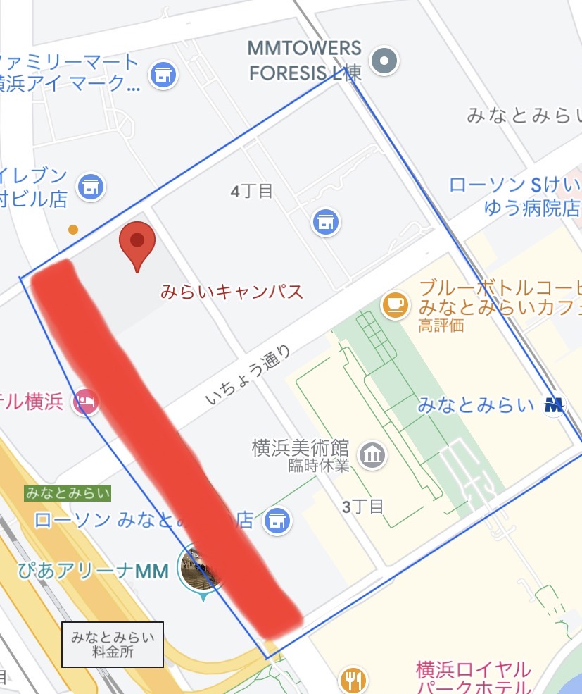
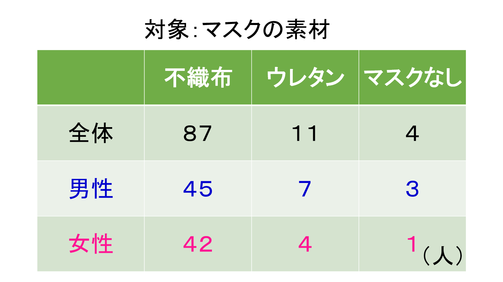
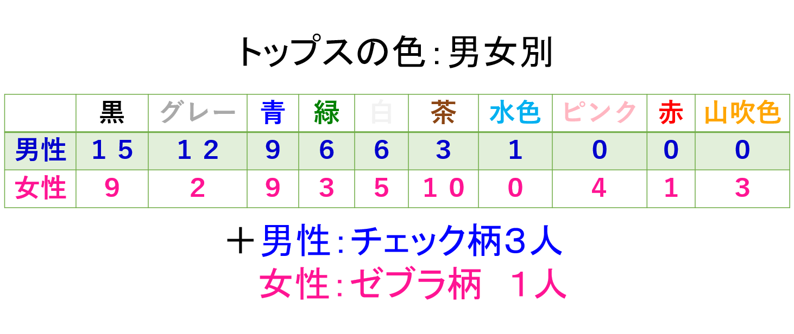

第３回 観察課題（移動）
観察概要
場所：神奈川大学みなとみらいキャンパス前～けやき通り入り口までの栄本町線
下図の赤線部分

観察日：１０月１８日１３：５０から７分間・１４：４０から７分間
観察時間：往復１４分
観察方法：メンバー２名がビデオ撮影、必要に応じてカウンター・メモの使用、撮影した動画をもとに後日再集計。
観察対象：トップス・マスク
観察内容：男女別 トップスの色・マスクの素材
観察人数：１０２人

観察前の仮説
季節の変わり目で雨予報のため、厚着をしている人が多い。
栄えてる場所で人通りも多いため、みんなマスクをつけている。
みなとみらいはおしゃれな印象のため、全体的に色物を取り入れている人が多い。
マスク

大差はないが、若干男性の方がウレタンマスク使用者やそもそもつけてない人が多いことがわかる。
よって、男性の方が快適さを求めているように見て取れた。
トップス

※全体的に範囲を占めている色で集計。EX)重ね着であれば、羽織っているものetc.
女性の方が秋っぽい色を取り入れているのが見て取れる。
全体的にモノクロが多いことから、シンプルな服装の人が多いことも分かる。
観察後の考察・結果
不織布のマスクを使用している人が多いことから、日本人は政府や国の方針に従順であり、慎重な人が多いと考える。
都市部でも、歩道でマスクを外している人もいた。
不織布のマスクでも、一般的に使われている白いマスクだけでなく、形状や色の違うものをつけている人が２９人もいた。
そのため、マスクもファッションの一部になりつつあることが伺える。
お洒落な街と言われるところでは、服装はシンプルな人が多い。
涼しくはなってきているが、着込んでいる人は少なかった。
ヒートテックなどの薄くても暖かく入れるものの普及から、厚着をする人は少なかったと考えられる。
色物を取り入れていても、シンプルな感じで着こなしており、派手な服装の人はいなかった。
感想・まとめ
半袖の人が２人ほどいて、風通りの多いビル街のため、驚いた。
重ね着でもお洒落に着こなしている人が多く見受けられた。
会社員の人も多いビル街であるため、学生のような若年層以外は、落ち着いた雰囲気の服装の方が多い印象を受けた。
ビル街で、学生も社会人も活動中の時間帯で人が少ないと思っていたら、案外外にいる人がいて、観察できて良かった。
小学生も数人見かけた。
今回の観察を経て、グループでやるのと個人でやるのとでは、負担の量も違って、カウンターで車が通った数を調べている人たちの大変さを思い知った。
また、観察前に何を対象とするか、どのようにやるのかなどを、予め具体的に決めておくことの重要性を学んだ。
準備がいかに大切かを学べた。そのほかにも、日常の中で対象の物を見つけて、着眼点を持って身の回りを観察すると、意外な発見があることの面白さも学べた。
今後も、自分なりに課題設定をして、日常からいろんな観察をして、新たなアイデアを生み出していきたいと感じた。